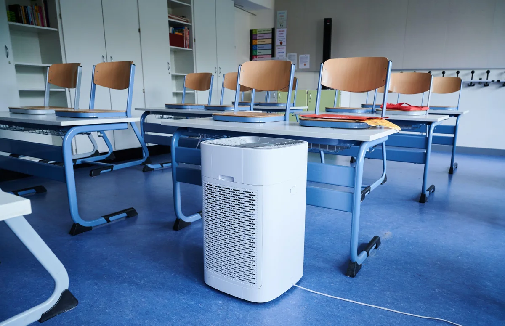

The company
What we're building and why.
This page covers why we start with schools, why the current products fail at institutional scale, and what Tidal Air is building instead.
The beachhead
Schools first. Every building eventually.
Over 3 million classrooms in the US. The 100 largest districts serve roughly 1 in 4 students nationally. Concentrated, scalable, and the demand is already there.
Wildfire smoke is now an annual event across much of the country. Chronic absenteeism from respiratory illness is a growing problem. Research links clean air to attendance and cognitive performance, and districts are starting to act on it with real budget. Funding mechanisms exist and are expanding.
Schools are also where the playbook gets built. When biosecurity concerns push verified clean air requirements into offices, hospitals, and public buildings, the product and operations need to already exist. That's why schools come first.
The gap
Built for living rooms, deployed across schools.

Since COVID, school districts have spent heavily on air purification. The results have been poor, and the reasons are structural, not incidental. The products available were designed for consumers and sold into institutions without any of the tooling institutions actually need.
The three problems that keep showing up:
Too loud to actually use.
Portable purifiers are marketed at maximum fan speeds that are loud enough to disrupt instruction. Teachers turn them down or off. The noise levels that are appropriate for a classroom deliver a fraction of advertised performance. The headline numbers are fiction.
Captive consumables.
Proprietary filters, often over $100 per set, on a replacement schedule designed to generate revenue rather than reflect actual filter condition. Over three years, filter replacement costs exceed the original hardware investment.
No way to manage or verify anything at scale.
There is no fleet visibility, no measurement of whether air quality standards are actually being met, and no way for a facilities team to manage hundreds of units across a district without physically visiting each one. Districts are buying boxes and hoping.
These are not bugs in a few products. This is the architecture of the entire category. The products institutions are buying were designed for living rooms, not school districts.
What we're building
The enterprise version of air purification.
Air quality cannot be managed as infrastructure using products designed for a consumer's bedroom. The fix starts with hardware, extends to the business model, and changes how a district actually manages air quality across its buildings.

Hardware designed for classrooms, not living rooms.
Ceiling-mounted, out of reach, out of the way. Quiet enough to run at full performance during instruction without violating the classroom acoustic standard. Moves enough air to meet the CDC-endorsed target for reducing airborne transmission. Nobody turns it off because nobody needs to.
A business model that enables deployment, not one that punishes it.
Every unit uses off-the-shelf HVAC filters from any supplier. Replacement is triggered by a sensor measuring actual filter condition, not a calendar. Reaching high scale means districts need to be able to say yes without the economics working against them. The current industry model does not allow that. Tidal Air grows when infrastructure grows, not when filters expire.
Clean air for the building, not a purifier for a room.
Each unit reports its own performance continuously, and a single dashboard makes that legible and actionable for a facilities director or a principal, not just an engineer reading raw data.
When the hardware stays on and performs, and the economics don't punish a district for scaling, clean air stops being a program that fades and starts being infrastructure that grows. The system proves it's working, and that proof is what makes the next building an easy yes.
There's a lot more to this than what's on this page. If any of it sounds interesting, reach out. I'm happy to talk through where things are, what I'm looking for, and whether it might be a fit.
bill@tidalairsystems.com